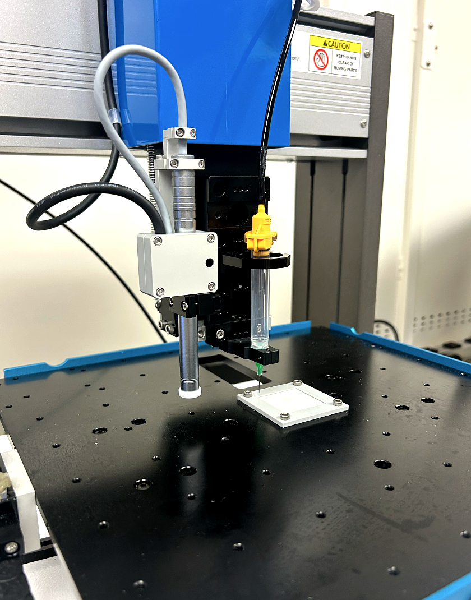
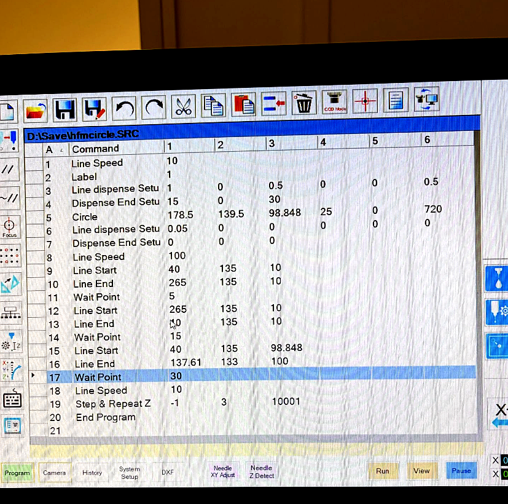
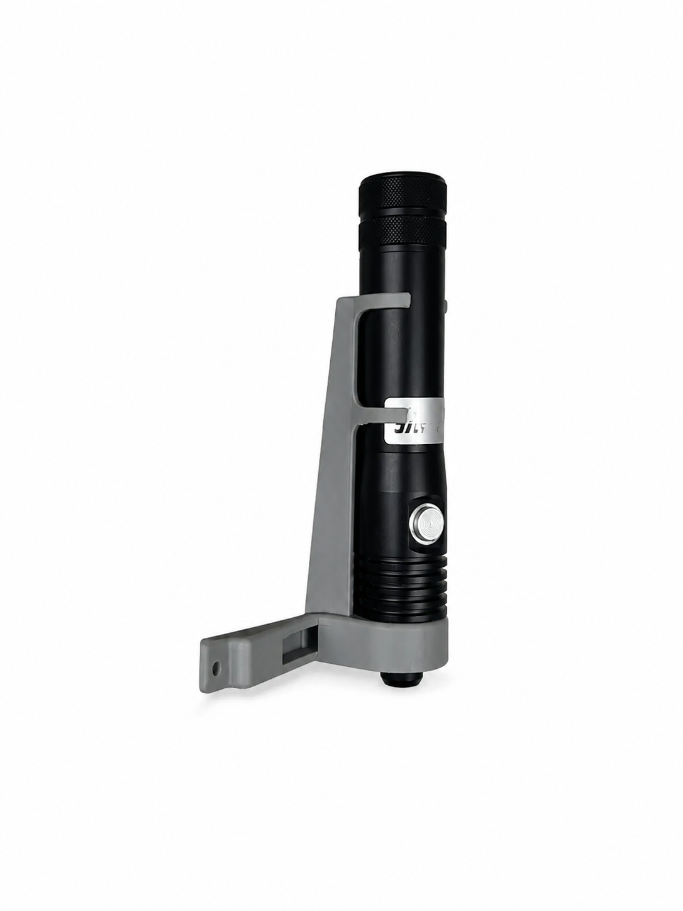
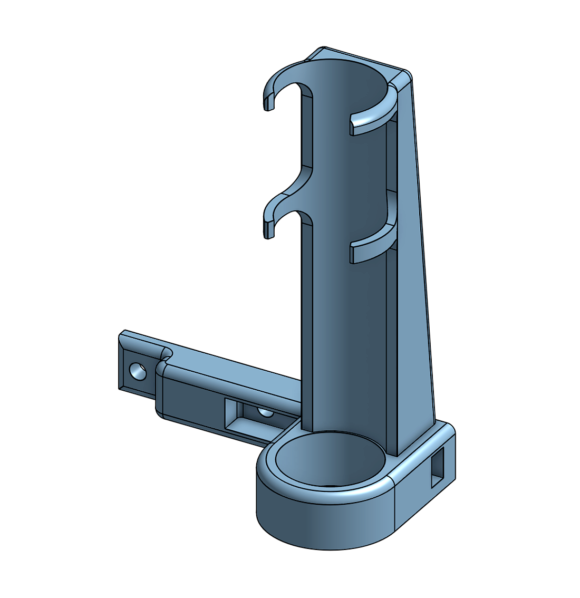

An automated bonding system for stacked Oxyplus PMP hollow fiber membrane sheets. Developed through systematic approach elimination, robotic UV adhesive dispensing, and custom tooling design.
The hollow fiber membrane oxygenator project involves developing a bonding method for stacking Oxyplus PMP 90/200 hollow fiber membrane sheets into a functional multi-layer oxygenator. PMP (polymethylpentene) is the industry standard material for high-performance oxygenator membranes due to its gas permeability, low plasma leakage resistance, and biocompatibility profile.
The core engineering challenge is sealing stacked fiber sheets together without causing corner flow stasis where blood can clot, while ensuring bonds are verifiable layer by layer. Multiple bonding strategies were evaluated and eliminated before using a robotic UV adheisve dispensing approach. A Nordson EFD E3V deposited a precise circular adhesive bead on each sheet, eliminating statis, and then cured using a UWAVE UV pen. PLA mock sheets were 3D printed to prototype the stacking process with peel testing to show bond strength.

Nordson EFD E3V depositing circular UV adhesive bead on PLA mock sheet
Bonding approcahes were evaluated among four constraints: no axial fiber compression, no unverifiable interior bonding, no blood-contacting solubles, and a circular flow bopundary to prevent corner stasis. Adhesive tape, mechanical gaskets, TPU rings, and edge potting were ruled out before converging on a UV adhesive automated dispensing system.
A Nordson EFD E3V dispensing robot was programmed in SRC to deposit a circular Panacol Vitralit UV adhesive bead on each sheet. The circular geometry eliminated corner stasis where the rign defines the blood flow boundary. The full program automates dispensing, UV cure sweeps, wait periods, and Z-axis stepping between layers, requiring only manual sheet placement between each cycle.

UV adhesive curing required a two-stage approach. A fast initial sweep at 175mm/s which partially cures the adhesiver without fully curing it, allowing the next sheet to bond without adhesive spreading across. A second sweep after compression locks the sheet in with a 30 second full cure at a fixed position. Ambient light degrades the adhesive in the syringe which was mitigated using alumnium foil wrapping at the point of loading.
A custom mount was designed in Onshape and printed on the Bambu X1 Carbon to attach the UWAVE UV pen to the Nordson Z-axis holder. The pen's tapered design required a clip in feature and set screws for the mount to prevent slipping under gravity. The UWAVE CL04 was also quoted to reduce beam size from 7-9 mm to 2-3 mm for a more precise ring width curing in future iterations.

